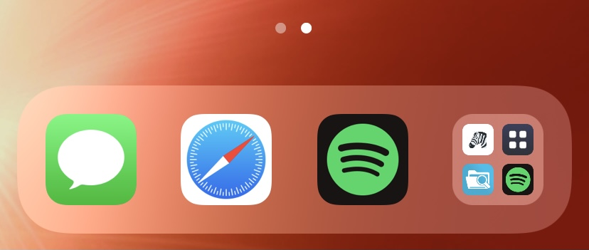

-
Show recently opened apps on the Home Screen, similarly to iPadOS 15. This is a beta release and features are subject to change. Open source here.

In this version
-
1.1.1
- Updated dependencies.
- Recents will now dismiss when invoking swipe gestures or pressing the home button.
- Fix empty spaces in the app picker.
- Fix the app picker not dismissing when opening apps in some cases.
Previous updates
-
1.1-b1
- Added settings page.
- Tapping the app will now show a list of recently opened apps, rather than launching the app library.
- Added option to present app library instead of the recently opened apps view.
- Code improvements and bug fixes.
-
1.0.0-b4
- Fixed a safe mode loop crash which occured when the app was placed in an iPad floating dock.
-
1.0.0-b3
- Fixed a rare crash.
- Cleaned up code significantly.
- Use more Swift API.
-
1.0.0-b2
- Fixed a crash which occured when the password-autofill pop-up appeared.
-
1.0.0-b1
- Initial release.
No other updates found.
Known Issues
- No current issues.